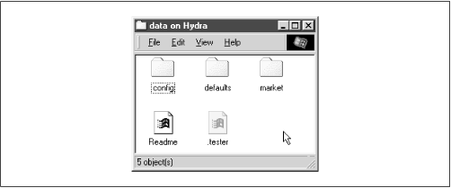
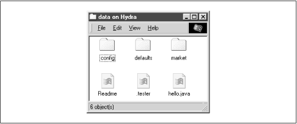
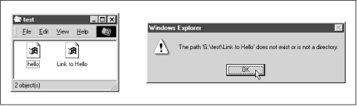

Using Samba
Robert Eckstein, David Collier-Brown, Peter Kelly1st Edition November 1999
1-56592-449-5, Order Number: 4495
416 pages, $34.95
|
|
|
|
|
Using SambaRobert Eckstein, David Collier-Brown, Peter Kelly1st Edition November 1999 1-56592-449-5, Order Number: 4495 416 pages, $34.95 |
5.2 Filesystem Differences
One of the biggest issues for which Samba has to correct is the difference between Unix and non-Unix filesystems. This includes items such as handling symbolic links, hidden files, and dot files. In addition, file permissions can also be a headache if not accounted for properly. This section describes how to use Samba to make up for some of those annoying differences, and even how to add some new functionality of its own.
5.2.1 Hiding and Vetoing Files
There are some cases when we need to ensure that a user cannot see or access a file at all. Other times, we don't want to keep a user from accessing a file - we just want to hide it when they view the contents of the directory. On Windows systems, an attribute of files allows them to be hidden from a folder listing. With Unix, the traditional way of hiding files in a directory is to precede them with a dot (.). This prevents items such as configuration files or defaults from being seen when performing an ordinary
lscommand. Keeping a user from accessing a file at all, however, involves working with permissions on files and or directories.The first option we should discuss is the boolean
hidedotfiles. This option does exactly what it says. When set toyes, the option treats files beginning with a period (.) as hidden. If set tono, those files are always shown. The important thing to remember is that the files are only hidden. If the user has chosen to show all hidden files while browsing (e.g., using the Folder Options menu item under the View menu in Windows 98), they will still be able to see the files, as shown in Figure 5.2.Figure 5.2: Hidden files in the [data] share
Instead of simply hiding files beginning with a dot, you can also specify a string pattern to Samba for files to hide, using the
hidefilesoption. For example, let's assume that we specified the following in our example[data]share:[data] path = /home/samba/data browseable = yes guest ok = yes writeable = yes case sensitive = no hide files = /*.java/*README*/Each entry for this option must begin, end, or be separated from another with a slash ( / ) character, even if there is only one pattern listed. This convention allows spaces to appear in filenames. In this example, the share directory would appear as shown in Figure 5.3. Again, note that we have set the Windows 98 option to view hidden files for the window.
Figure 5.3: Hiding files based on filename patterns
If we want to prevent users from seeing files at all, we can instead use the
vetofilesoption. This option, which takes the same syntax as thehidefilesoption, specifies a list of files that should never be seen by the user. For example, let's change the[data]share to the following:[data] path = /home/samba/data browseable = yes guest ok = yes writeable = yes case sensitive = no veto files = /*.java/*README*/The syntax of this option is identical to the
hidefilesconfiguration option: each entry must begin, end, or be separated from another with a slash (/) character, even if there is only one pattern listed. By doing so, the fileshello.javaandREADMEwill simply disappear from the directory, and the user will not be able to access them through SMB.There is one other question that we need to address. What happens if the user tries to delete a directory that contains vetoed files? This is where the
deletevetofilesoption comes in. If this boolean option is set toyes, the user is allowed to delete both the regular files and the vetoed files in the directory, and the directory itself will be removed. If the option is set tono, the user will not be able to delete the vetoed files, and consequently the directory will not be deleted either. From the user's perspective, the directory will appear to be empty, but cannot be removed.The
dontdescenddirective specifies a list of directories whose contents Samba should not allow to be visible. Note that we say contents, not the directory itself. Users will be able to enter a directory marked as such, but they are prohibited from descending the directory tree any farther - they will always see an empty folder. For example, let's use this option with a more basic form of the share that we defined earlier in the chapter:[data] path = /home/samba/data browseable = yes guest ok = yes writeable = yes case sensitive = no dont descend = config defaultsIn addition, let's assume that the /home/samba/data directory has the following contents:
drwxr-xr-x 6 tom users 1024 Jun 13 09:24 . drwxr-xr-x 8 root root 1024 Jun 10 17:53 .. -rw-r--r-- 2 tom users 1024 Jun 9 11:43 README drwxr-xr-x 3 tom users 1024 Jun 13 09:28 config drwxr-xr-x 3 tom users 1024 Jun 13 09:28 defaults drwxr-xr-x 3 tom users 1024 Jun 13 09:28 marketIf the user then connects to the share, he or she would see the directories shown in Figure 5.4. However, the contents of the /config and /defaults directories would appear empty to the user, even if other folders or files existed in them. In addition, users cannot write any data to the folder (which prevents them from creating a file or folder with the same name as one that is already there but invisible). If a user attempts to do so, he or she will receive an "Access Denied" message.
dontdescendis an administrative option, not a security option, and is not a substitute for good file permissions.Figure 5.4: Contents of the [data] share with dont descend
5.2.2 Links
DOS and NT filesystems don't have symbolic links; Windows 95/98/NT systems approximate this with "shortcuts" instead. Therefore, when a client tries to open a symbolic link on a Samba server share, Samba attempts to follow the link to find the real file and let the client open it, as if he or she were on a Unix machine. If you don't want to allow this, set the
followsymlinksoption:[data] path = /home/samba/data browseable = yes guest ok = yes writeable = yes case sensitive = no follow symlinks = noYou can test this by creating a directory on the Unix server inside the share as the user that you are logging in with. Enter the following commands:
%mkdir hello; cd hello%cat "This is a test" >hello.txt%ln -s hello.txt "Link to hello"This results in the two files shown in the window in Figure 5.5. Normally, if you click on either one, you will receive a file which has the text "This is a test" inside of it. However, with the
followsymlinksoption set tono, you should receive an error similar to the dialog in Figure 5.5 if you click on "Link to hello."Figure 5.5: An error dialog trying to follow symbolic links when forbidden by Samba
Finally, let's discuss the
widelinksoption. This option, if set toyes, allows the client user to follow symbolic links that point outside the shared directory tree, including files or directories at the other end of the link. For example, let's assume that we modified the[data]share as follows:[data] path = /home/samba/data browseable = yes guest ok = yes writeable = yes case sensitive = no follow symlinks = yes wide links = yesAs long as the
followsymlinksoption is enabled, this will cause Samba to follow all symbolic links outside the current share tree. If we create a file outside the share (for example, in someone's home directory) and then create a link to it in the share as follows:ln -s ~tom/datafile ./datafilethen you will be able to open the file in Tom's directory as per the target file's permissions.
5.2.3 Filesystem Options
Table 5.4 shows a breakdown of the options we discussed earlier. We recommend the defaults for most, except those listed in the following descriptions.
Table 5.4: Filesystem Configuration Options Option
Parameters
Function
Default
Scope
unix realnameboolean
Provides Unix user's full name to client.
noGlobal
dont descendstring (list of directories)
Indicates a list of directories whose contents Samba should make invisible to clients.
None
Share
follow symlinksboolean
If set to
no, Samba will not honor symbolic links.
yesShare
getwd cacheboolean
If set to
yes, Samba will use a cache forgetwd( )calls.
yesGlobal
wide linksboolean
If set to
yes, Samba will follow symbolic links outside the share.
yesShare
hide dot filesboolean
If set to
yes, treats Unix hidden files as hidden files in Windows.
yesShare
hide filesstring (list of files)
List of file patterns to treat as hidden.
None
Share
veto filesstring (list of files)
List of file patterns to never show.
None
Share
delete veto filesboolean
If set to
yes, will delete files matched byveto fileswhen the directory they reside in is deleted.
noShare
5.2.3.1 unix realname
Some programs require a full username in order to operate. For example, a Windows email program often needs to associate a username with a given real name. If your system password file contains the real names of users in the GCOS field, the
unixrealnameoption instructs Samba to provide this information to clients. Without it, the name of the user will simply be his or her login ID. For example, if your Unix password file contains the following line:rcollins:/KaBfco47Rer5:500:500:Robert Collins: /home/rcollins:/bin/kshAnd the option in the configuration file is:
[global] unix realname = yesthen the name Robert Collins will be provided to any client that requests the real name of user
rcollins. You typically don't need to bother with this option.5.2.3.2 dont descend
The
dontdescendoption can be used to specify various directories that should appear empty to the client. Note that the directory itself will still appear. However, Samba will not show any of the contents of the directory to the client user. This is not a good option to use as a security feature (a user could probably find a way around it); it really is meant only as a convenience to keep client users from browsing into directories that might have sensitive files. See our example earlier in this section.5.2.3.3 follow symlinks
This option, which is discussed in greater detail earlier, controls whether Samba will follow a symbolic link in the Unix operating system to the target, or if it should return an error to the client user. If the option is set to
yes, the target of the link will be interpreted as the file.5.2.3.4 getwd cache
This global option specifies whether Samba should use a local cache for the Unix
getwd()( get current working directory) system call. You can override the default value ofyesas follows:[global] getwd cache = noSetting this option to
yescan significantly increase the time it takes to resolve the working directory, especially if thewidelinksoption is set tono. You should normally not need to alter this option.5.2.3.5 wide links
This option specifies whether the client user can follow symbolic links that point outside the shared directory tree. This includes any files or directories at the other end of the link, as long as the permissions are correct for the user. The default value for this option is
yes. Note that this option will not be honored if thefollowsymlinksoptions is set tono. Setting this option tonoslows smbd considerably.5.2.3.6 hide files
The
hidefilesoption provides one or more directory or filename patterns to Samba. Any file matching this pattern will be treated as a hidden file from the perspective of the client. Note that this simply means that the DOS hidden attribute is set, which may or may not mean that the user can actually see it while browsing.Each entry in the list must begin, end, or be separated from another entry with a slash (
/) character, even if there is only one pattern listed. This allows spaces to appear in the list. Asterisks can be used as a wildcard to represent zero or more characters. Questions marks can be used to represent exactly one character. For example:hide files = /.jav*/README.???/5.2.3.7 hide dot files
The
hidedotfilesoption hides any files on the server that begin with a dot (.) character, in order to mimic the functionality behind several shell commands that are present on Unix systems. Likehidefiles, those files that begin with a dot have the DOS hidden attribute set, which doesn't necessarily guarantee that a client cannot view them. The default value for this option isyes.5.2.3.8 veto files
More stringent than the hidden files state is the state provided by the
vetofilesconfiguration option. Samba won't even admit these files exist. You cannot list or open them from the client. In reality, this isn't a trustworthy security option. It is actually a mechanism to keep PC programs from deleting special files, such as ones used to store the resource fork of a Macintosh file on a Unix filesystem. If both Windows and Macs are sharing the same files, this can prevent ill-advised power users from removing files the Mac users need.The syntax of this option is identical to that of the
hidefilesconfiguration option: each entry must begin, end, or be separated from another with a slash ( / ) character, even if only one pattern is listed. Asterisks can be used as a wildcard to represent zero or more characters. Questions marks can be used to represent exactly one character. For example:veto files = /*config/*default?/This option is primarily administrative - not a substitute for good file permissions.
5.2.3.9 delete veto files
This option tells Samba to delete vetoed files when a user attempts to delete the directory in which they reside. The default value is
no. This means if a user tries to delete a directory that contains a vetoed file, the file (and the directory) will not be deleted. Instead, the directory will remain and appear to be empty from the perspective of the user. If set toyes, the directory and the vetoed files will be deleted.
 |
 |
 |
| 5.1 Browsing |
 | 5.3 File Permissions and Attributes on MS-DOS and Unix |
Back to: Using Samba
© 1999, O'Reilly & Associates, Inc.